01
Language
Select your preferred language (e.g. English (United Kingdom)).
Follow these steps to set up your SCC staff laptop.
Plug the charger into the laptop before setup. Laptops are not fully charged. If the device powers off during setup, it can cause issues or require setup to be started again.
If anything is missing, contact IT Support before continuing.
Select your preferred language (e.g. English (United Kingdom)).
Select your country or region.
Select your keyboard layout.
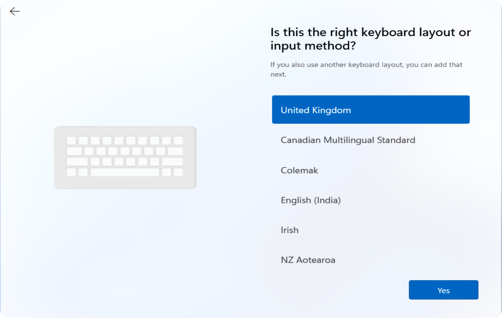
Select Skip if you don’t need another keyboard layout.
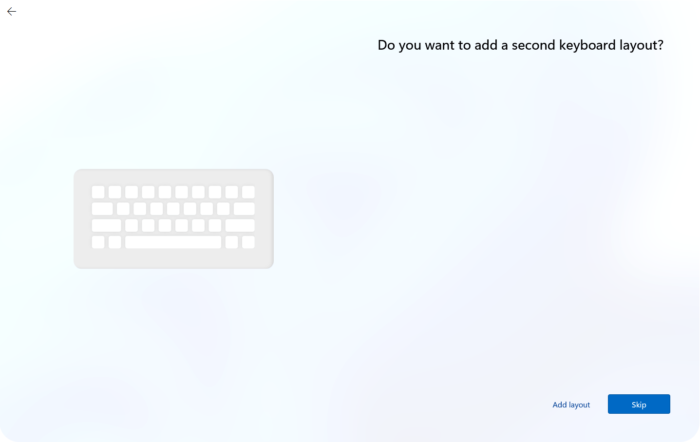
Connect to a Wi-Fi network (such as your home Wi-Fi).
If setting up in an SCC office, connect to SCC-WiFi. The password can be provided by IT if needed.
Windows may briefly check for updates and restart automatically. This is normal.
If the laptop restarts, allow it to power back on and continue setup.
Sign in using your SCC email address and password.
Important: You must see the Salford City Council logo on this sign-in screen.
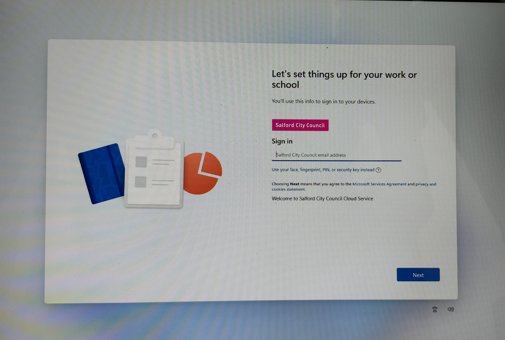
Your device preparation and initial setup will begin automatically. Please wait.
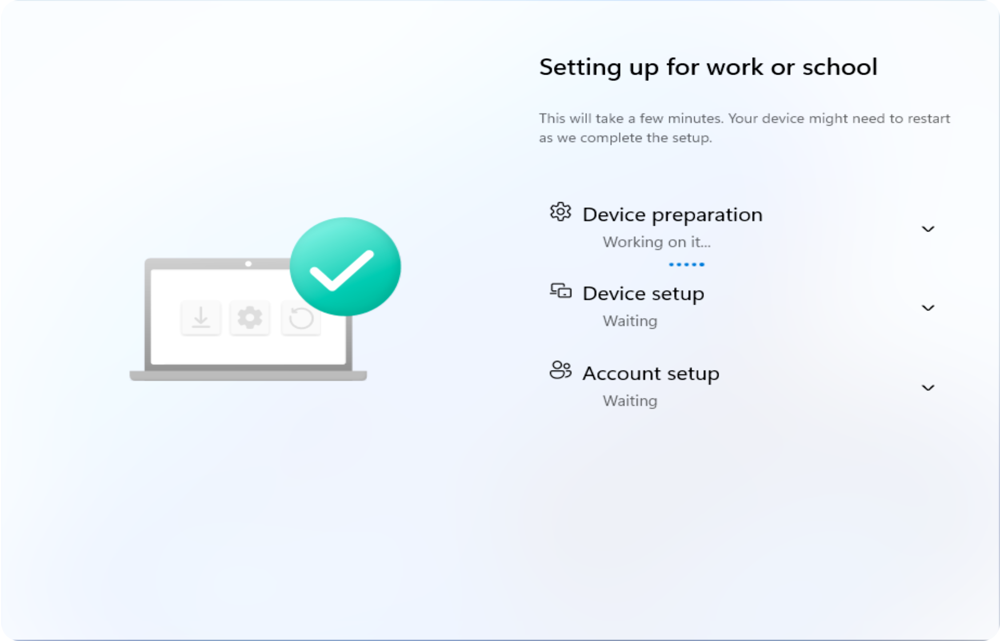
Sign in using your SCC email address and password (blue Windows sign-in screen).
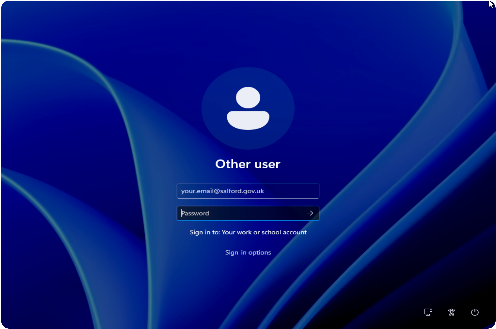
Windows continues setting up your work account. Please wait.
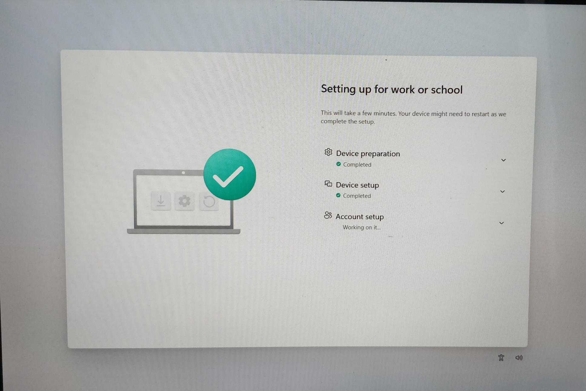
You can set up fingerprint sign-in now or skip this step. On SCC laptops, the fingerprint sensor is built into the power button — place your finger on it when prompted.
You’ll be asked to create a PIN for signing into your laptop.
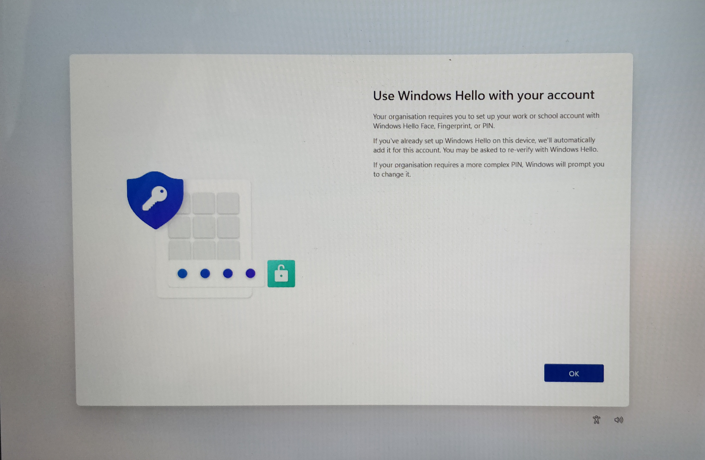
You’ll see a message about setting up another way to verify it’s you. Select Next to continue.
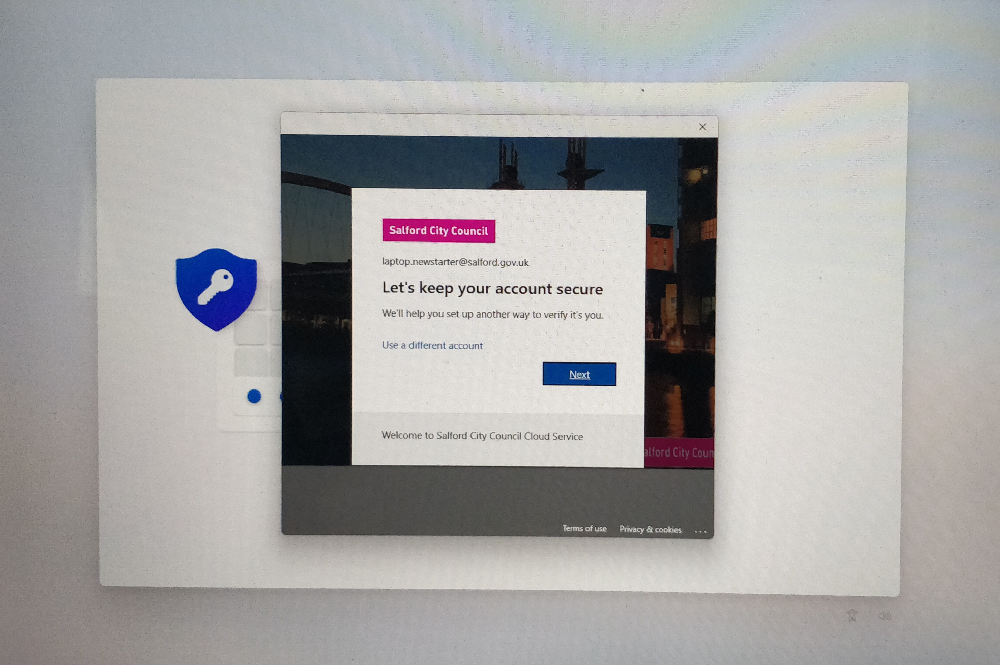
Install the Microsoft Authenticator app on your phone.
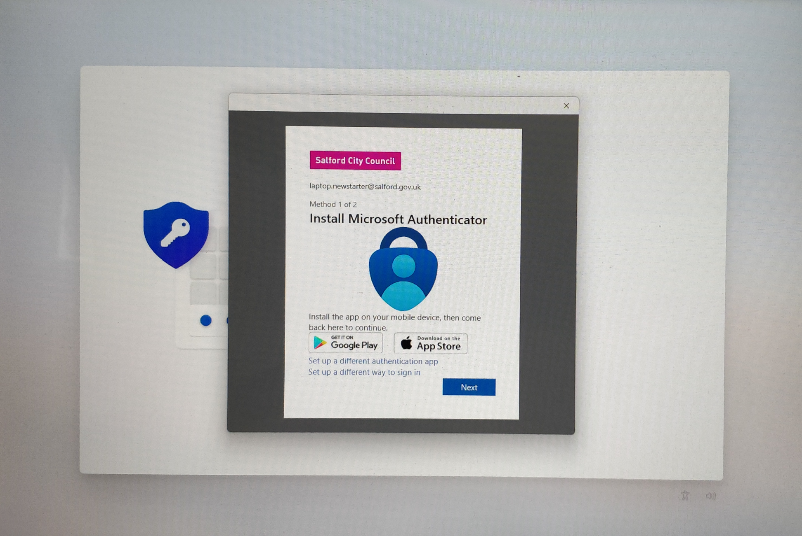
Open the Authenticator app and follow the on-screen steps. Select Next when ready.
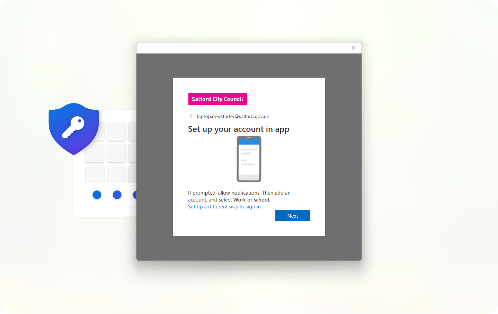
Use the Authenticator app to scan the QR code shown on screen.
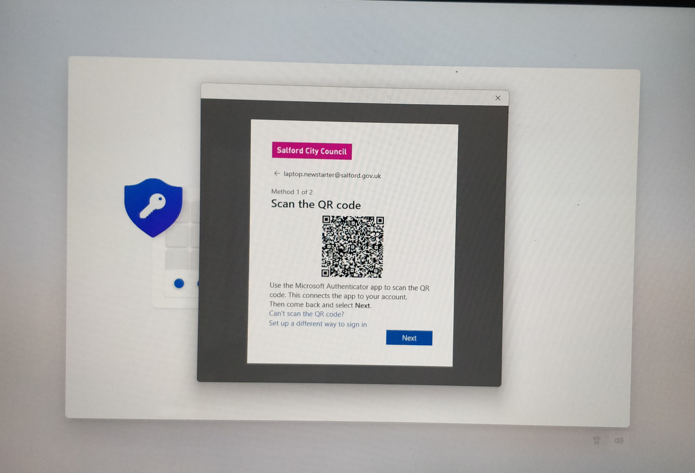
Add your mobile phone number when prompted. Once added, MFA setup will complete.
Return to Windows and complete your PIN setup.
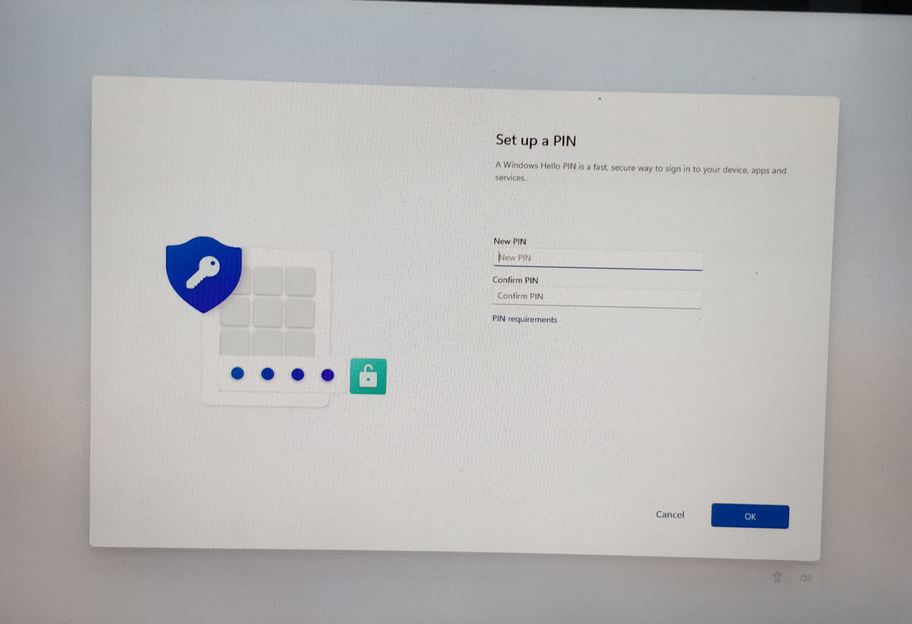
Use the taskbar search to find and open Company Portal.
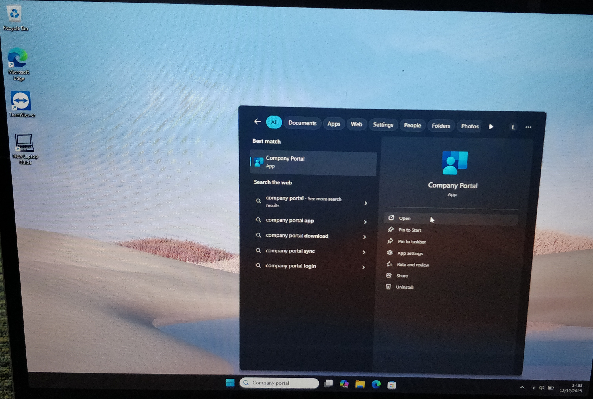
When prompted, select:
SCC Staff Laptops and Devices
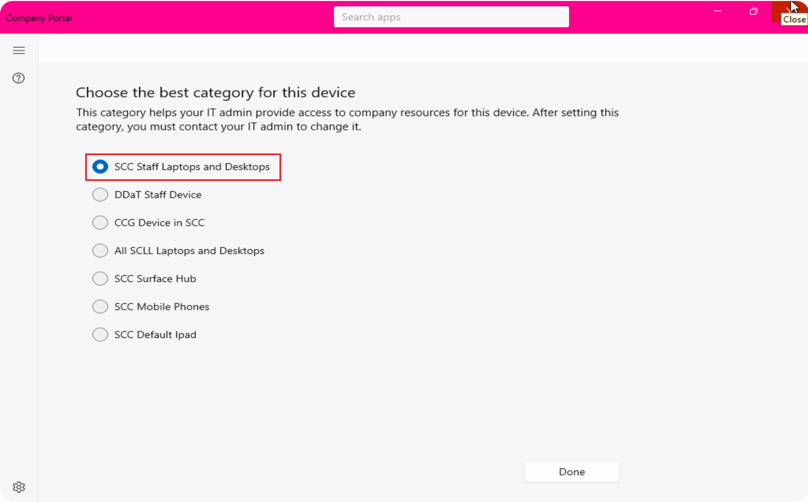
In Company Portal, browse and install the apps you need, including items like printer drivers and other SCC-approved software.
Select an app and click Install. Apps may take a few minutes to appear or install.
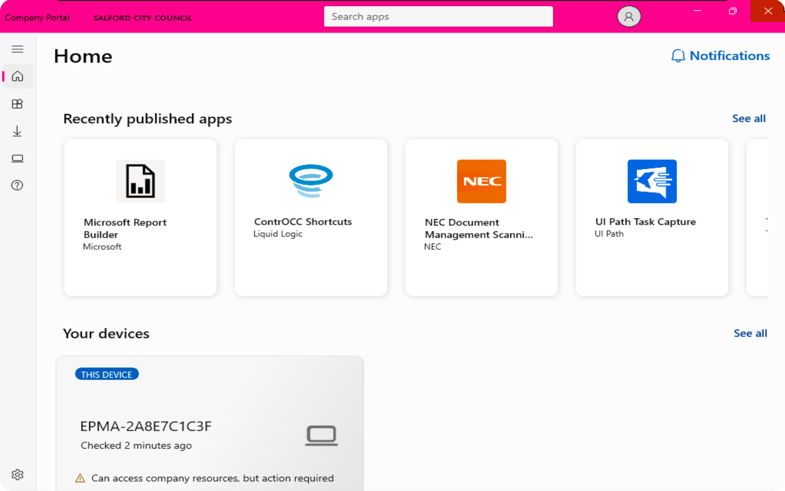
What if my laptop restarts during setup?
This is normal. Let the laptop power back on and continue setup.
What if I don’t see the Salford City Council logo when signing in?
If the SCC logo is not shown, the laptop may not be enrolled correctly. Contact IT Support before continuing.
Can I skip fingerprint setup?
Yes. Fingerprint setup is optional and can be added later from Windows settings.
What if I forget my PIN?
You can reset your PIN after setup using the on-screen sign-in options or by contacting IT Support.
Why do I need to set up Microsoft Authenticator?
Authenticator is required to keep your SCC account secure and verify it’s really you.
Can I set up the laptop at home?
Yes. You can complete setup using your home Wi-Fi.
Which Wi-Fi should I use in the office?
Connect to SCC-WiFi. You may need the latest password from IT.
My apps aren’t installing — what should I do?
Some apps take time to appear or install. Keep the laptop powered on and connected to the internet.
Where do I find Company Portal?
Search for Company Portal using the Windows search bar and open the app.
An app I need isn’t in Company Portal — how do I request it?
Raise an application request in Rubix. Include the app name, a link to the app, whether it’s free or licensed, and a brief business justification.
Who do I contact if I’m stuck?
Contact IT Support for help.